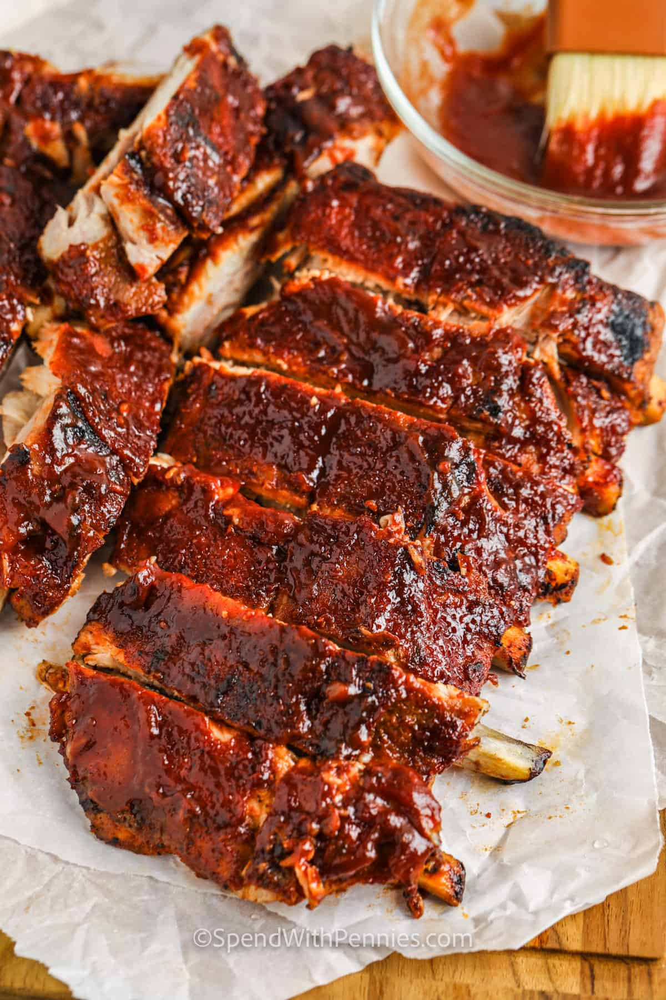

Home
Oven Baked Ribs Recipe

Making baked ribs in the oven ensures they are fall-off-the-bone tender and literally, perfect every single time.
Ingredients
- Ribs: I always use Baby Back (or Pork Back Ribs) because they’re the most tender. They do cost a bit more but, in my opinion, it is worth the extra money if it is in your budget. You can use side ribs in this recipe, but you may need to add a little more cooking time.
- Onion & Garlic: Onion and garlic are added to flavor the meat during roasting.
- Seasonings: I use a homemade dry rub as I like to control the amount of salt in these ribs. You can change it up with other spices (try cumin, cayenne pepper, or dry mustard). Swap the homemade seasoning for salt & pepper or a prepared rub (this is our favorite pre-made rub).
- Barbecue Sauce (or not!): Use your favorite bottled barbecue sauce, make your own, or opt out completely! My husband loves salt and pepper ribs, while I love barbecue sauce mixed with chili sauce for zesty and delicious sticky ribs.
Instructions
- Prep Ribs: Remove the membrane if present and season the ribs (recipe below).
- Bake: Place the ribs, meat side down, on a baking sheet, smother with onion and garlic, and seal with aluminum foil.
- Bake (optional): Bake the ribs until tender and then grill or broil to brown a little bit if you’d like.